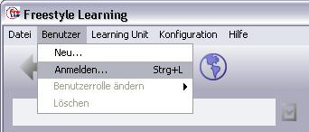
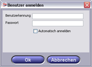

Zum Erstellen oder Arbeiten mit einer Learning Unit, wählen sie "Benutzer / Anmelden" aus dem Menü.

In dem daraufhin auftauchenden Dialog, können Sie Ihren Benutzernamen und Passwort angeben und mit Drücken durch "OK" bestätigen. Wenn Sie auf einer lokalen FSL-Installation permanent mit dem gleichen Benutzer arbeiten, besteht die Möglichkeit über das Setzen des Häkchens für "Automatisch anmelden" eine permanente Anmeldung vorzunehmen.

Bei zukünftigen FSL-Sitzungen, werden Sie nun automatisch eingeloggt. Zum Abstellen der automatischen Anmeldung, wählen Sie "Benutzer / Anmelden" aus dem Menü und melden sich erneut an, ohne das Setzen des Häckchens für "Automatisch anmelden". Benutzerkennungen und Passwörter, die für jede Freestyle Learning-Installation gültig sind, finden Sie in der nachstehenden Tabelle.
| Benutzername: | Passwort: | Verwendung: |
| learner | learner | Standardeinstelung für das Arbeiten mit Learnning Units |
| author | author | Standardeinstellung für das Erstellen eigener Units |
Weitere Informationen zur Erstellung einer neuen Benutzerkennnung erhalten sie hier.
Zurück zur Hauptseite